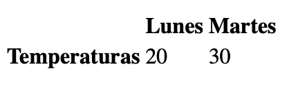

Los datos de la tabla no tienen sentido sin títulos para describir lo que representan.
Para agregar títulos a renglones y columnas, se usa el elemento de encabezado: <th>.
El elemento de encabezado de tabla se utiliza como un elemento de datos de tabla. Al igual que los datos de una tabla, el encabezado debe colocarse dentro de una fila de la tabla.
<table>
<tr>
<th> </th>
<th scope = "col"> Lunes </th>
<th scope = "col"> Martes </th>
</tr>
<tr>
<th scope = "row"> Temperaturas </th>
<td> 73 </td>
<td> 81 </td>
</tr>
</table>
¿Qué pasa en el código anterior?
Primero, se agregó un renglón para contener los tres encabezados: un encabezado en blanco, un encabezado de Lunes y un encabezado de Martes. El encabezado en blanco crea la celda adicional de la tabla necesaria para alinear los encabezados de la tabla correctamente con los datos a los que corresponden.
En el segundo renglón, se agregó un encabezado de tabla como título del renglón: Temperaturas.
La salida del código es:

El uso del atributo scope, puede tomar uno de dos valores:
row: para indicar que el encabezado es para un renglón.
col: para indicar que el encabezado es para una columna.
 Hay muchos sitios web que muestran información como precios de acciones, resultados deportivos, datos de facturas y más. Estos datos son de naturaleza tabular, lo que significa que una tabla suele ser la mejor manera de presentar dichos datos.
Hay muchos sitios web que muestran información como precios de acciones, resultados deportivos, datos de facturas y más. Estos datos son de naturaleza tabular, lo que significa que una tabla suele ser la mejor manera de presentar dichos datos.